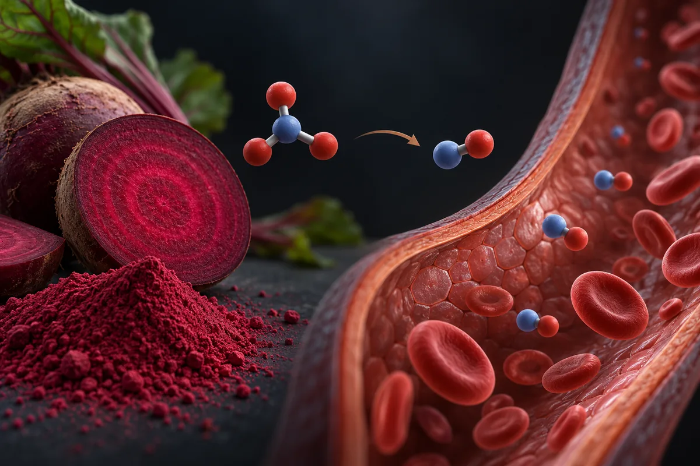

Beterraba em pó e nitrato dietético
O "+33% de ereção noturna" não aparece em nenhum estudo publicado que localizei; no treino, o nitrato da beterraba tem efeito real, mas pequeno.

Matériel expérimental. Lisez avant d’utiliser quoi que ce soit d’ici.
Rien sur cette page n’est une recommandation médicale, une prescription ou un plan de traitement. C’est une traduction organisée de protocoles qui circulent dans des communautés de recherche et, quand cela existe, de ce que des essais publiés ont testé. Les deux choses sont marquées différemment — et ne sont pas équivalentes.
La plupart des composés ici n’ont pas d’approbation de la FDA pour un usage humain. Plusieurs sont vendus avec l’étiquette « usage exclusivement en recherche », ce qui signifie qu’ils n’ont passé aucun contrôle de pureté, de stérilité ou de dosage pour une consommation par des personnes. Une dose décrite par la communauté n’est pas une dose validée : c’est ce que quelqu’un a rapporté avoir fait.
Parlez avec un professionnel de santé habilité avant d’envisager l’un de ces composés. Si vous en utilisez déjà un et ressentez quelque chose d’imprévu, consultez — n’attendez pas le prochain examen de routine.
Résumé
A beterraba é rica em nitrato, que bactérias da boca transformam em nitrito e o corpo, depois, em óxido nítrico. Esse caminho está bem descrito, e o enxaguante bucal o atrapalha. No treino, uma revisão de 20 meta-análises achou ganhos pequenos em resistência muscular e tempo até a exaustão, e nada na maioria dos outros desfechos. Na pressão, a queda média é de alguns mmHg. O estudo de ereção noturna com "10 homens e +33%" não foi localizado, e os dois ensaios registrados sobre nitrato e ereção não têm resultado. O teor de nitrato varia até 50 vezes entre produtos.
Pourquoi cette page existe
A beterraba em pó aparece descrita em vídeos curtos sobre saúde masculina que vi publicados na internet, como o "pozinho de centavos" que dá "pump monstro". Os números vêm com nome de revista: quase 10% mais repetições e quase 20% mais potência no supino (Journal of Strength and Conditioning Research), 16% mais tolerância ao esforço (Journal of Applied Physiology), o enxaguante bucal que "anula o efeito" (Hypertension) e, com citrulina antes de dormir, 33% mais atividade erétil noturna em 10 homens (Journal of Sexual Medicine, 2024). Em volta, cronologias de 30 dias com urina rosa, "energia sem crash", raciocínio "bizarramente rápido" e, com bicarbonato, um "hack anabólico".
Eu conferi. Levantei as alegações de 5 vídeos curtos, separei as 17 que são verificáveis e fui atrás de cada revista citada. Nenhum número desta página veio da fonte secundária do site.
A beterraba (Beta vulgaris) é uma das hortaliças mais ricas em nitrato inorgânico. Segundo a revisão de Hord e colegas (2009), cerca de 80% do nitrato da dieta vem de vegetais. O nitrato desta página não é o mesmo que os "nitratos" de farmácia usados para angina, que são moléculas orgânicas diferentes.
Este site trata de assunto vizinho também em Espinafre vermelho (red spinach, Amaranthus) e nitrato.
O mecanismo é real, passa pela boca, e é por isso que o enxaguante atrapalha
Segundo a revisão de Jones e colegas (2021), o óxido nítrico pode vir de dois caminhos. Um é a enzima que usa arginina. O outro é a redução do nitrato a nitrito e do nitrito a óxido nítrico. O nitrato que se come vai para o sangue, é captado pelas glândulas salivares e volta à boca na saliva. Lá, bactérias o reduzem a nitrito. O nitrito engolido aumenta no sangue e vira óxido nítrico, sobretudo onde há pouco oxigênio.
A boca é parte do caminho, e isso foi medido. Kapil e colegas (2013) deram enxaguante de clorexidina a 19 voluntários saudáveis por 7 dias. A produção de nitrito na boca caiu 90%, o nitrito no sangue caiu 25%, e a pressão subiu de 2 a 3,5 mmHg. Bondonno e colegas (2015) repetiram em 15 hipertensos tratados: em 3 dias de enxaguante, a sistólica subiu 2,3 mmHg. Uma meta-análise de 123 estudos (Silva 2022) achou que práticas que reduzem as bactérias da boca diminuem o efeito do nitrato no exercício.
Há também um efeito nas mitocôndrias. Larsen e colegas (2011) acharam, em músculo de voluntários saudáveis, melhor eficiência da produção de energia depois do nitrato, ligada à queda no custo de oxigênio do exercício. Bailey e colegas (2009) já tinham medido esse custo menor em 8 homens pedalando.
Combien de preuves existent, vraiment
Os números abaixo foram levantados por mim em 16 de outubro de 2026, no PubMed e no ClinicalTrials.gov. A consulta de cada linha está ao lado do número, para qualquer pessoa repetir e me contradizer.
| Base | Requête | Résultat |
|---|---|---|
| PubMed | beetroot OR "beet root" OR "beet juice" | 1.876 artigos |
| PubMed | (beetroot OR "beet root" OR "beet juice" OR "dietary nitrate" OR "inorganic nitrate") | 2.763 artigos |
| PubMed | (beetroot OR "beet juice" OR "dietary nitrate" OR "inorganic nitrate") AND (Randomized Controlled Trial[Publication Type] OR Meta-Analysis[Publication Type]) | 515 artigos |
| PubMed | (beetroot[Title/Abstract] OR "beet juice"[Title/Abstract] OR "dietary nitrate"[Title/Abstract] OR "inorganic nitrate"[Title/Abstract]) AND (exercise[Title/Abstract] OR performance[Title/Abstract]) AND (Meta-Analysis[Publication Type] OR Systematic Review[Publication Type]) | 64 artigos |
| PubMed | (beetroot[Title/Abstract] OR "beet juice"[Title/Abstract] OR "dietary nitrate"[Title/Abstract] OR "inorganic nitrate"[Title/Abstract]) AND (blood pressure[Title/Abstract]) AND (Meta-Analysis[Publication Type] OR Systematic Review[Publication Type]) | 32 artigos |
| PubMed | (beetroot OR "beet juice" OR "dietary nitrate" OR "inorganic nitrate") AND (resistance exercise OR bench press OR resistance training OR muscular strength) | 94 artigos |
| PubMed | (beetroot OR "beet juice" OR "dietary nitrate" OR "inorganic nitrate") AND (erectile OR erection) | 1 artigo |
| PubMed | (beetroot OR "beet juice" OR "dietary nitrate" OR nitrate) AND (mouthwash OR antiseptic) AND (blood pressure) | 103 artigos |
| PubMed | (beetroot OR "beet juice" OR "dietary nitrate") AND (bicarbonate) | 20 artigos |
| ClinicalTrials.gov | intervenção: beetroot OR dietary nitrate OR beet juice | 316 estudos registrados |
| ClinicalTrials.gov | intervenção: (beetroot OR dietary nitrate OR beet juice) AND AREA[Phase]PHASE3 | 9 ensaios de fase 3 |
| ClinicalTrials.gov | intervenção: (beetroot OR dietary nitrate OR beet juice OR nitrate) AND AREA[Condition]erectile dysfunction | 3 estudos registrados |
Lecture honnête de ces chiffres
- Para treino e pressão, há muita evidência. São 64 revisões ou meta-análises sobre exercício e 32 sobre pressão, mais do que a arginina, o outro suplemento desta série medido com as mesmas buscas (53 e 25).
- Para ereção, quase nada. O único artigo do PubMed que junta beterraba ou nitrato dietético e ereção é uma revisão geral sobre suplementos de óxido nítrico. Não há ensaio publicado.
- Registro não é resultado. Dos 3 registros em disfunção erétil, um é de arginina; a busca o devolveu porque o registro traz a palavra "nitrate". Os outros dois, de nitrato, estão com situação desconhecida e sem resultado: um com 40 homens na Alemanha, com nitrato de sódio por 4 semanas, e outro com 20 homens, nitrato em cápsula com tadalafila.
- Quantidade de estudo não é tamanho de efeito. A revisão de 20 meta-análises (Poon 2025) classificou a qualidade metodológica da maioria delas entre "baixa" e "criticamente baixa".
- Contagem de artigo mede atenção acadêmica, não evidência de desfecho.
Les études qui soutiennent les allégations
Segundo o PubMed, estes são os trabalhos clínicos concretos por trás do que se diz sobre a beterraba e o nitrato. Leia o que cada um mediu, e em quantas pessoas.
| Étude | N | Contexte | Ce qui a été rapporté | Réserve |
|---|---|---|---|---|
| Poon et al., 2025 (revisão de meta-análises) Sports Med 55(5):1213-1231 · PMID 40085422 | 2.672 (180 estudos, 20 meta-análises) | Nitrato contra placebo em 11 domínios de desempenho | Melhora no tempo até a exaustão (SMD 0,33), distância percorrida (0,42), resistência muscular (0,48) e potência de pico (0,25); nenhum efeito nos demais desfechos | Efeito maior com ≥ 6 mmol/dia (372 mg/dia) por mais de 3 dias; qualidade das revisões de baixa a criticamente baixa |
| Williams et al., 2020 J Strength Cond Res 34(4):924-928 · PMID 31913252 | 11 | Homens treinados em força; 70 mL de suco de beterraba 2 h antes de supino; duplo-cego, cruzado | Velocidade média (p = 0,011), potência média (p = 0,015) e repetições até a falha (p = 0,002) maiores | O resumo não publica os percentuais de 10% e 20% |
| Tan et al., 2023 (meta-análise) Nutrients 15(11):2493 · PMID 37299456 | 6 estudos | Agachamento e supino em homens treinados | Repetições até a falha SMD 0,43; potência média 0,40; potência de pico e velocidade de pico sem efeito | Poucos estudos e variabilidade grande, segundo os autores |
| Evangelista et al., 2024 (meta-análise) J Am Nutr Assoc 43(1):77-91 · PMID 37167368 | 27 estudos | Homens saudáveis; suplementos à base de beterraba | Resistência muscular SMD 0,31; força SMD 0,26, significativa só quando medida em fadiga | Nitrato de 316–985 mg/dia, 2–3 h antes |
| Bailey et al., 2009 J Appl Physiol 107(4):1144-55 · PMID 19661447 | 8 | Homens de 19 a 38 anos; 500 mL/dia de suco de beterraba por 6 dias; duplo-cego, cruzado | Tempo até a exaustão de 583 s (placebo) para 675 s (P < 0,05); sistólica de 132 para 124 mmHg | O resumo publica os segundos, não um percentual |
| Silva et al., 2022 (meta-análise) Adv Nutr 13(5):1866-1881 · PMID 35580578 | 1.705 (123 estudos) | Nitrato em adultos saudáveis | Efeito geral SMD 0,101; suco e dieta funcionaram, sal de nitrato não; práticas que afetam as bactérias da boca reduzem o efeito | Melhor em esforços de 2 a 10 min |
| d'Unienville et al., 2021 (meta-análise) J Int Soc Sports Nutr 18(1):76 · PMID 34965876 | 118 estudos | Alimentos com nitrato, polifenóis, arginina ou citrulina em endurance | Nitrato: benefício "trivial" (SMD 0,15); alimentos com citrulina: nenhum efeito (3 estudos); beterraba sim, espinafre vermelho não | Sem efeito em mulheres nem em atletas muito treinados |
| Jones et al., 2022 (meta-análise) J Diet Suppl 19(6):749-771 · PMID 34151694 | 6 estudos na meta-análise | Dano muscular após exercício | Recuperação de força mais rápida em 72 h; limiar de dor maior em 48 e 72 h; estresse oxidativo e CK sem efeito; PCR maior com beterraba em 48 h | Todos os estudos com "alguma preocupação" de viés |
| Siervo et al., 2013 (meta-análise) J Nutr 143(6):818-26 · PMID 23596162 | 254 (16 ensaios) | Nitrato e suco de beterraba, de 2 h a 15 dias | Sistólica −4,4 mmHg (−5,9 a −2,8); diastólica −1,1 mmHg, sem significância | Estudos curtos e pequenos |
| Kapil et al., 2015 Hypertension 65(2):320-7 · PMID 25421976 | 68 | Hipertensos; 250 mL/dia de suco de beterraba ou suco sem nitrato, 4 semanas | Pressão de consultório −7,7/−2,4 mmHg; 24 h −7,7/−5,2; rigidez arterial −0,59 m/s | Financiado por fundação cardiológica britânica |
| Forster et al., 2026 (meta-análise) Nutr Res 146:111-120 · PMID 41619653 | 181 (6 ECRs) | Nitrato de sódio por ≥ 1 semana; maiores de 50 anos | Sem queda significativa na sistólica (−3,81) nem na diastólica (−2,00) | Exclui suco de beterraba |
| Kapil et al., 2013 Free Radic Biol Med 55:93-100 · PMID 23183324 | 19 | Saudáveis; enxaguante de clorexidina por 7 dias | Nitrito oral −90%; nitrito no sangue −25%; pressão +2 a 3,5 mmHg | Não testou beterraba |
| Bondonno et al., 2015 Am J Hypertens 28(5):572-5 · PMID 25359409 | 15 | Hipertensos tratados; enxaguante antibacteriano por 3 dias, cruzado | Sistólica +2,3 mmHg; diastólica sem mudança | É no American Journal of Hypertension, não na Hypertension |
| Gallardo e Coggan, 2019 Int J Sport Nutr Exerc Metab 29(4):345-349 · PMID 30299195 | 45 lotes, 24 produtos | Teor de nitrato de sucos de beterraba vendidos a atletas | Variação de 30% ± 26% entre lotes do mesmo produto; cerca de 50 vezes entre produtos; só 5 davam ≥ 5 mmol por dose de forma consistente | Sucos, não pó |
| Larsen et al., 2011 Cell Metab 13(2):149-59 · PMID 21284982 | não informado no resumo | Voluntários saudáveis; nitrato inorgânico, duplo-cego, cruzado | Eficiência das mitocôndrias do músculo melhorou, ligada ao menor custo de oxigênio | Nitrato inorgânico, não beterraba |
| Presley et al., 2011 Nitric Oxide 24(1):34-42 · PMID 20951824 | não informado no resumo | Idosos (74,7 anos em média); dieta rica ou pobre em nitrato | Perfusão cerebral global sem mudança; perfusão regional maior na substância branca do lobo frontal | O resumo não relata teste de raciocínio; um autor tem pedido de patente de sais de nitrito |
| Callahan et al., 2017 Int J Sport Nutr Exerc Metab 27(3):271-278 · PMID 27834492 | 8 | Ciclistas treinados; cristais de beterraba, bicarbonato, os dois ou placebo | Nenhuma diferença de potência nem de tempo nos 4 km | É o teste da combinação com bicarbonato |
Doses utilisées dans des études humaines publiées
Ceci n'est pas une recommandation de dose : c'est le relevé de ce qui a été administré dans des études publiées, avec la finalité de chacune. Hors du contexte de l'étude, ces chiffres ne se transfèrent pas.
| Étude | Dose | Durée | Finalité de l'étude |
|---|---|---|---|
| Williams et al., 2020 | 70 mL de suco de beterraba, 2 h antes | Dose única | Supino |
| Bailey et al., 2009 | 500 mL/dia de suco (11,2 ± 0,6 mM de nitrato) | 6 jours | Custo de oxigênio e tolerância ao esforço |
| Kapil et al., 2010 | 250 mL de suco (5,5 mmol de nitrato); cápsulas de nitrato de potássio de 4 a 24 mmol | Dose única | Pressão |
| Kapil et al., 2015 | 250 mL/dia de suco | 4 semaines | Pressão em hipertensos |
| Callahan et al., 2017 | 15 g/dia de cristais (300 mg de nitrato por 15 g) + 15 g 1 h antes; bicarbonato 0,3 g/kg | 3 dias | Ciclismo, sozinhos ou combinados |
| Evangelista et al., 2024 (faixa dos estudos) | 316–985 mg/dia de nitrato, 2–3 h antes | Agudo ou curto | Força e resistência muscular |
| Silva et al., 2022 (faixa mais eficaz na análise) | 5–14,9 mmol, ≥ 150 min antes | Agudo | Desempenho |
| Poon et al., 2025 (subgrupo) | ≥ 6 mmol/dia (372 mg/dia) | > 3 dias | Tempo até a exaustão |
| NCT04116060 (registro, sem resultado) | 0,12 mmol/kg/dia de nitrato de sódio | 4 semaines | Função erétil (IIEF-5) |
Os vídeos não informam dose de beterraba, e falam em "pó" enquanto quase todos os estudos usaram suco. A dose que importa é a de nitrato, e ela não aparece no rótulo de muitos produtos (Gallardo 2019).
Das 17 alegações conferidas, a de ereção é a única sem nenhum estudo publicado por trás
Cada linha é uma alegação como ela circula, sem o nome de quem a fez. O veredito usa seis rótulos: confirmado, parcialmente, não sustentado, sem estudo em humanos, estudo em animal ou in vitro e número não encontrado na fonte citada.
| O que se diz | O que os estudos mostram | Verdict |
|---|---|---|
| Nitrato → nitrito pelas bactérias da boca → óxido nítrico no estômago e nos vasos → vasodilatação | Descrito na revisão de Jones (2021); o papel da boca foi medido com enxaguante (Kapil 2013) | Confirmado |
| É uma via "direta e de ação rápida", que "não depende dos rins nem das enzimas do sangue" | Não depende da enzima que usa arginina, mas depende de glândulas salivares e bactérias; a meta-análise de 2022 achou melhor efeito com a dose ≥ 150 min antes do exercício (Silva 2022) | Parcialmente |
| Supino até a falha: quase 10% mais repetições e quase 20% mais potência (JSCR) | Williams 2020, 11 homens: repetições e potência média maiores (p = 0,002 e 0,015); os percentuais não estão no resumo; a meta-análise de supino e agachamento acha efeito pequeno (Tan 2023) | Parcialmente |
| Tolerância ao esforço +16% (Journal of Applied Physiology) | Bailey 2009: tempo até a exaustão de 583 para 675 s em 8 homens, com 500 mL/dia por 6 dias | Confirmado (o resumo publica os segundos, não o percentual) |
| "Até 16% de aumento de força em exercícios de sobrecarga" | O 16% é de tempo de pedalada até a exaustão, não de força; em força, o efeito é pequeno e só aparece em fadiga (Evangelista 2024) | Não sustentado |
| O enxaguante bucal anula o efeito; testado na revista Hypertension em hipertensos; "a pressão voltou a subir" | O efeito existe: +2 a 3,5 mmHg em saudáveis (Kapil 2013) e +2,3 mmHg em hipertensos tratados (Bondonno 2015, no American Journal of Hypertension). Não localizei o estudo na Hypertension | Parcialmente |
| O teor de nitrato da beterraba varia com solo, estação e transporte; o pó padronizado garante "dose igual nos estudos" | A variação é real, até entre lotes do mesmo produto, e de cerca de 50 vezes entre produtos (Gallardo 2019); "padronizado" no rótulo não garantiu dose nesse levantamento. NÃO VERIFIQUEI o papel do solo e da estação | Parcialmente |
| "Pump monstro"; "pump brutal" no dia 15 | Nenhum estudo localizado mediu "pump"; os efeitos medidos no treino são pequenos (Tan 2023; Poon 2025) | Não sustentado |
| Vasodilatação "violenta" nos primeiros dias; pressão que estabiliza e vasos mais flexíveis no fim do mês | Queda média de 4,4 mmHg na sistólica (Siervo 2013); em hipertensos, −7,7 mmHg e menos rigidez arterial em 4 semanas (Kapil 2015); com nitrato de sódio em maiores de 50 anos, sem queda significativa (Forster 2026) | Parcialmente |
| Urina rosa é a betalaína, "inofensiva" | A urina avermelhada (beetúria) aparece em 10% a 14% das pessoas, por pigmentos da beterraba, e é mais frequente em quem tem deficiência de ferro ou má absorção (Sauder 2023) | Parcialmente |
| A eficiência mitocondrial muda; o supino "exige menos do pulmão"; a fadiga demora | Eficiência mitocondrial melhor (Larsen 2011) e menor custo de oxigênio na bicicleta (Bailey 2009); não localizei estudo disso no supino | Parcialmente |
| Betaína e antioxidantes "trituram" a inflamação; a dor tardia "despenca" | Recuperação de força e limiar de dor melhores; estresse oxidativo e CK sem efeito; PCR maior com beterraba em 48 h (Jones 2022) | Parcialmente |
| "Energia limpa", "zero crash" | Nenhum estudo localizado | Não sustentado |
| Mais fluxo no lobo frontal; raciocínio "bizarramente rápido" | Em idosos, perfusão regional frontal maior com dieta rica em nitrato, sem medir raciocínio (Presley 2011) | Parcialmente |
| "Dá de 10 a 0" na citrulina | Em endurance, alimentos com nitrato tiveram efeito "trivial" e alimentos com citrulina, nenhum (d'Unienville 2021) | Parcialmente |
| Com citrulina antes de dormir, +33% de atividade erétil noturna em 10 homens (Journal of Sexual Medicine, 2024) | O PubMed devolve 1 artigo para nitrato dietético e ereção, uma revisão geral; os dois ensaios registrados de nitrato em ereção não têm resultado | Número não encontrado na fonte citada |
| Com bicarbonato por 30 dias: "hack anabólico", 4 a 5 repetições a mais no supino, força e densidade | O ensaio da combinação não achou ganho em 8 ciclistas (Callahan 2017); não localizei estudo de 30 dias com supino | Não sustentado |
Placar: 2 confirmadas, 10 parcialmente, 4 não sustentadas e 1 com número não encontrado na fonte citada.
O efeito existe, mas é pequeno, e some em quem já é muito treinado
A beterraba é o caso mais sólido entre os "precursores de óxido nítrico" que circulam nos mesmos vídeos. Mesmo assim, os tamanhos de efeito são pequenos. Na meta-análise de 123 estudos (Silva 2022), o efeito geral foi de 0,101 em diferença padronizada. Na de alimentos (d'Unienville 2021), o benefício do nitrato foi "trivial" e não apareceu em mulheres nem em atletas de endurance muito treinados.
No treino de força, que é o que os vídeos prometem, a meta-análise de supino e agachamento achou efeito pequeno em repetições e potência média, e nenhum em potência de pico (Tan 2023). A de suplementos de beterraba achou força maior só quando medida em fadiga (Evangelista 2024). É um ganho mensurável em laboratório. Não é "pump monstro".
Segurança, efeitos adversos e quem não deve usar sem médico
- Pressão. O nitrato baixa a pressão alguns mmHg em média. Quem usa remédio de pressão, nitrato de farmácia, tadalafila ou sildenafila pode somar efeitos: isso é inferência minha. Não localizei estudo publicado sobre nitrato dietético somado a inibidor de PDE5; o único registro que achei, com tadalafila, não tem resultado. NÃO VERIFIQUEI a bula de nenhum desses remédios nesta página.
- Ingestão diária aceitável. Segundo a revisão de Hord e colegas (2009), um padrão alimentar rico em vegetais com nitrato passa em 550% a ingestão diária aceitável da OMS para um adulto de 60 kg. A revisão sistemática de Zamani e colegas (2021) diz que o suco de beterraba pode facilmente passar desse limite e que o nitrato estimula a formação de compostos N-nitrosos, uma classe conhecida como cancerígena. Os autores dizem também que os dados sobre efeitos negativos são escassos. NÃO VERIFIQUEI o valor numérico da ingestão diária aceitável na fonte original.
- Câncer e bebês. A mesma revisão de 2009 registra que nitrato e nitrito na comida se associam a maior risco de câncer gastrointestinal e, em bebês, a meta-hemoglobinemia. Isso não se aplica igualmente a toda fonte de nitrato, e a discussão continua; mas basta para dizer que "mais é melhor" não vale.
- Urina avermelhada. É esperada em parte das pessoas e mais comum em quem tem deficiência de ferro ou má absorção (Sauder 2023).
- Enxaguante bucal reduz o efeito e, sozinho, sobe a pressão alguns mmHg (Kapil 2013; Bondonno 2015).
- Rim e oxalato: NÃO VERIFIQUEI dado sobre cálculo renal.
- Interações formais: NÃO VERIFIQUEI bases de interação medicamentosa.
Statut réglementaire
- Brasil, alegação de rótulo: não há alegação autorizada para nitrato ou beterraba no Anexo V. Pela RDC 243/2018 (art. 17), o rótulo não pode sugerir finalidade terapêutica.
- Brasil, medicamento: nenhum registro com beterraba, Beta vulgaris, nitrato de sódio ou nitrato de potássio (tabela abaixo).
- Estados Unidos e União Europeia: NÃO VERIFIQUEI.
- WADA: nitrato e beterraba não aparecem na Lista Proibida de 2026, em vigor desde 1º de janeiro de 2026.
| Principe actif | Schéma recherché | Enregistrements actifs | Classe thérapeutique déclarée | Produits |
|---|---|---|---|---|
| beterraba, nitrato inorgânico | beterraba|beta vulgaris|nitrato de sodio|nitrato de potassio | 0 | — | Nenhuma linha, ativa ou inativa |
Ce que ce relevé n'a pas fait
- Li resumos, não os artigos inteiros. Em especial, NÃO VERIFIQUEI os percentuais de 10% e 20% no texto completo do estudo de supino.
- Não localizei o estudo do Journal of Sexual Medicine de 2024 com 10 homens e +33%, nem um estudo de enxaguante bucal com beterraba publicado na revista Hypertension.
- Não verifiquei o valor da ingestão diária aceitável de nitrato na fonte da OMS ou da EFSA, nem o papel do solo e da estação no teor de nitrato.
- Não conferi a situação nos Estados Unidos e na União Europeia, nem o enquadramento do pó de beterraba como alimento no Brasil.
- Não avaliei interações em base de interações nem li bula de inibidor de PDE5 ou de nitrato de farmácia.
- Não avaliei o bicarbonato, a citrulina e o espinafre vermelho como protocolos próprios, salvo nas comparações acima.
Références
- Jones AM, Vanhatalo A, Seals DR, et al. Dietary Nitrate and Nitric Oxide Metabolism: Mouth, Circulation, Skeletal Muscle, and Exercise Performance. Med Sci Sports Exerc. 2021;53(2):280-294. PMID 32735111 — o caminho nitrato → nitrito → óxido nítrico e o papel da boca.
- Hord NG, Tang Y, Bryan NS. Food sources of nitrates and nitrites: the physiologic context for potential health benefits. Am J Clin Nutr. 2009;90(1):1-10. PMID 19439460 — 80% do nitrato vem de vegetais; riscos descritos; dieta rica em nitrato acima da ingestão aceitável.
- Kapil V, Haydar SM, Pearl V, et al. Physiological role for nitrate-reducing oral bacteria in blood pressure control. Free Radic Biol Med. 2013;55:93-100. PMID 23183324 — enxaguante: nitrito oral −90% e pressão +2 a 3,5 mmHg.
- Bondonno CP, Liu AH, Croft KD, et al. Antibacterial mouthwash blunts oral nitrate reduction and increases blood pressure in treated hypertensive men and women. Am J Hypertens. 2015;28(5):572-5. PMID 25359409 — o teste em hipertensos tratados.
- Kapil V, Milsom AB, Okorie M, et al. Inorganic nitrate supplementation lowers blood pressure in humans: role for nitrite-derived NO. Hypertension. 2010;56(2):274-81. PMID 20585108 — queda de pressão dependente da dose de nitrato.
- Kapil V, Khambata RS, Robertson A, et al. Dietary nitrate provides sustained blood pressure lowering in hypertensive patients: a randomized, phase 2, double-blind, placebo-controlled study. Hypertension. 2015;65(2):320-7. PMID 25421976 — 68 hipertensos, 4 semanas, −7,7 mmHg.
- Siervo M, Lara J, Ogbonmwan I, et al. Inorganic nitrate and beetroot juice supplementation reduces blood pressure in adults: a systematic review and meta-analysis. J Nutr. 2013;143(6):818-26. PMID 23596162 — sistólica −4,4 mmHg em 16 ensaios.
- Forster D, Waclawovsky G, Stefani GP. Effects of chronic nitrate supplementation on blood pressure in adults: a systematic review and meta-analysis of randomized clinical trials. Nutr Res. 2026;146:111-120. PMID 41619653 — nitrato de sódio crônico sem queda significativa em maiores de 50 anos.
- Williams TD, Martin MP, Mintz JA, et al. Effect of Acute Beetroot Juice Supplementation on Bench Press Power, Velocity, and Repetition Volume. J Strength Cond Res. 2020;34(4):924-928. PMID 31913252 — o estudo de supino do JSCR: 11 homens, sem os percentuais no resumo.
- Bailey SJ, Winyard P, Vanhatalo A, et al. Dietary nitrate supplementation reduces the O2 cost of low-intensity exercise and enhances tolerance to high-intensity exercise in humans. J Appl Physiol (1985). 2009;107(4):1144-55. PMID 19661447 — o estudo do Journal of Applied Physiology: 583 → 675 s.
- Tan R, Pennell A, Karl ST, et al. Effects of Dietary Nitrate Supplementation on Back Squat and Bench Press Performance: A Systematic Review and Meta-Analysis. Nutrients. 2023;15(11):2493. PMID 37299456 — efeito pequeno em supino e agachamento.
- Evangelista JF, Meirelles CM, Aguiar GS, et al. Effects of Beetroot-Based Supplements on Muscular Endurance and Strength in Healthy Male Individuals: A Systematic Review and Meta-Analysis. J Am Nutr Assoc. 2024;43(1):77-91. PMID 37167368 — força maior só em fadiga.
- Poon ET, Iu JC, Sum WM, et al. Dietary Nitrate Supplementation and Exercise Performance: An Umbrella Review of 20 Published Systematic Reviews with Meta-analyses. Sports Med. 2025;55(5):1213-1231. PMID 40085422 — o retrato de 20 meta-análises.
- Silva KVC, Costa BD, Gomes AC, et al. Factors that Moderate the Effect of Nitrate Ingestion on Exercise Performance in Adults: A Systematic Review with Meta-Analyses and Meta-Regressions. Adv Nutr. 2022;13(5):1866-1881. PMID 35580578 — efeito geral de 0,101; cuidados com a boca reduzem o efeito.
- d'Unienville NMA, Blake HT, Coates AM, et al. Effect of food sources of nitrate, polyphenols, L-arginine and L-citrulline on endurance exercise performance: a systematic review and meta-analysis of randomised controlled trials. J Int Soc Sports Nutr. 2021;18(1):76. PMID 34965876 — nitrato trivial; citrulina sem efeito.
- Jones L, Bailey SJ, Rowland SN, et al. The Effect of Nitrate-Rich Beetroot Juice on Markers of Exercise-Induced Muscle Damage: A Systematic Review and Meta-Analysis of Human Intervention Trials. J Diet Suppl. 2022;19(6):749-771. PMID 34151694 — recuperação e dor; PCR maior em 48 h.
- Larsen FJ, Schiffer TA, Borniquel S, et al. Dietary inorganic nitrate improves mitochondrial efficiency in humans. Cell Metab. 2011;13(2):149-59. PMID 21284982 — eficiência mitocondrial.
- Presley TD, Morgan AR, Bechtold E, et al. Acute effect of a high nitrate diet on brain perfusion in older adults. Nitric Oxide. 2011;24(1):34-42. PMID 20951824 — perfusão frontal regional em idosos.
- Gallardo EJ, Coggan AR. What's in Your Beet Juice? Nitrate and Nitrite Content of Beet Juice Products Marketed to Athletes. Int J Sport Nutr Exerc Metab. 2019;29(4):345-349. PMID 30299195 — teor de nitrato variando 50 vezes entre produtos.
- Callahan MJ, Parr EB, Hawley JA, et al. Single and Combined Effects of Beetroot Crystals and Sodium Bicarbonate on 4-km Cycling Time Trial Performance. Int J Sport Nutr Exerc Metab. 2017;27(3):271-278. PMID 27834492 — beterraba com bicarbonato sem ganho.
- Sauder HM, Rout P. Beeturia. In: StatPearls. Treasure Island (FL): StatPearls Publishing; 2023. PMID 30725697 — urina avermelhada em 10% a 14%, mais comum com deficiência de ferro.
- Zamani H, de Joode MEJR, Hossein IJ, et al. The benefits and risks of beetroot juice consumption: a systematic review. Crit Rev Food Sci Nutr. 2021;61(5):788-804. PMID 32292042 — risco de passar da ingestão aceitável e de compostos N-nitrosos.
- Kiani AK, Bonetti G, Medori MC, et al. Dietary supplements for improving nitric-oxide synthesis. J Prev Med Hyg. 2022;63(2 Suppl 3):E239-E245. PMID 36479475 — o único artigo do PubMed na busca de nitrato e ereção: uma revisão geral.
- Registro NCT04116060 no ClinicalTrials.gov — nitrato de sódio em 40 homens com disfunção erétil, 4 semanas, situação desconhecida, sem resultado.
- Registro NCT06213077 no ClinicalTrials.gov — cápsulas de nitrato com tadalafila em 20 homens, situação desconhecida, sem resultado.
- Lista Proibida da WADA de 2026 (cópia mantida pela Universidade do Esporte de Colônia) — nitrato e beterraba não aparecem.
- E-utilities de PubMed (esearch) — la base de tous les décomptes d'articles de cette page.
- API publique de ClinicalTrials.gov, version 2 — la base de tous les décomptes d'études et de phase 3 de cette page.